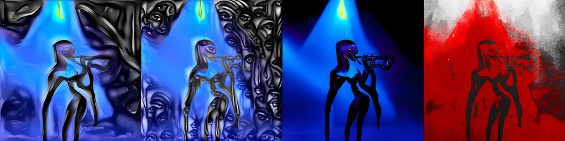

by Athena Novo · Async Art Master #4897 · four-phase · time rule: UTC
Updates four times a day to reflect sunrise / day / sunset / night cycles.

Sunrise 06:00–06:59 · Day 07:00–17:59 · Sunset 18:00–18:59 · Night 19:00–05:59 (UTC)
The full-size files live on IPFS; each is linked on three public gateways, in the order to try them (gateway.pinata.cloud, ipfs.io, dweb.link). Every line says what our own check found: 5 we keep this file pinned, 1 our own copy, pinned here and verified on upload.
QmPyHSXsEPhNEF… gateway.pinata.cloud · ipfs.io · dweb.link — we keep this file pinned, checked 2026-09-23 09:13QmR5ZdgCiAH7Jd… gateway.pinata.cloud · ipfs.io · dweb.link — we keep this file pinned, checked 2026-09-23 09:13Qme6mZ78JqrbnA… gateway.pinata.cloud · ipfs.io · dweb.link — we keep this file pinned, checked 2026-09-23 09:13QmUrUZB89wUaH3… gateway.pinata.cloud · ipfs.io · dweb.link — we keep this file pinned, checked 2026-09-23 09:13bafybeigjwgsxq… gateway.pinata.cloud · ipfs.io · dweb.link — our own copy, pinned here and verified on upload, checked 2026-09-22QmRkqA7hsPAKu3… gateway.pinata.cloud · ipfs.io · dweb.link — we keep this file pinned, checked 2026-09-23 09:13QmR5ZdgCiAH7Jd… gateway.pinata.cloud · ipfs.io · dweb.link — we keep this file pinned, checked 2026-09-23 09:13QmR5ZdgCiAH7Jd… gateway.pinata.cloud · ipfs.io · dweb.link — we keep this file pinned, checked 2026-09-23 09:13QmUrUZB89wUaH3… gateway.pinata.cloud · ipfs.io · dweb.link — we keep this file pinned, checked 2026-09-23 09:13QmPyHSXsEPhNEF… gateway.pinata.cloud · ipfs.io · dweb.link — we keep this file pinned, checked 2026-09-23 09:13Qme6mZ78JqrbnA… gateway.pinata.cloud · ipfs.io · dweb.link — we keep this file pinned, checked 2026-09-23 09:13“I didn't fall in love, I rose in it.” ― Toni Morrison, Jazz As an extension of Athena's Concepts on Async Art, I've started my debut with KnownOrigin with Jazz. This piece is extension of the Jazz concept to new artwork on other platforms. Async's Day/Night templates provides a good background for a multilayered story of a trumpet player named Zoey as in Zoey Plays the Trumpet. 4 pieces in a Daily cycle by Athena Novo on Async Art, 2022
async.art · OpenSea · Etherscan
Generated archive pages. Content identifiers point to the public IPFS network.